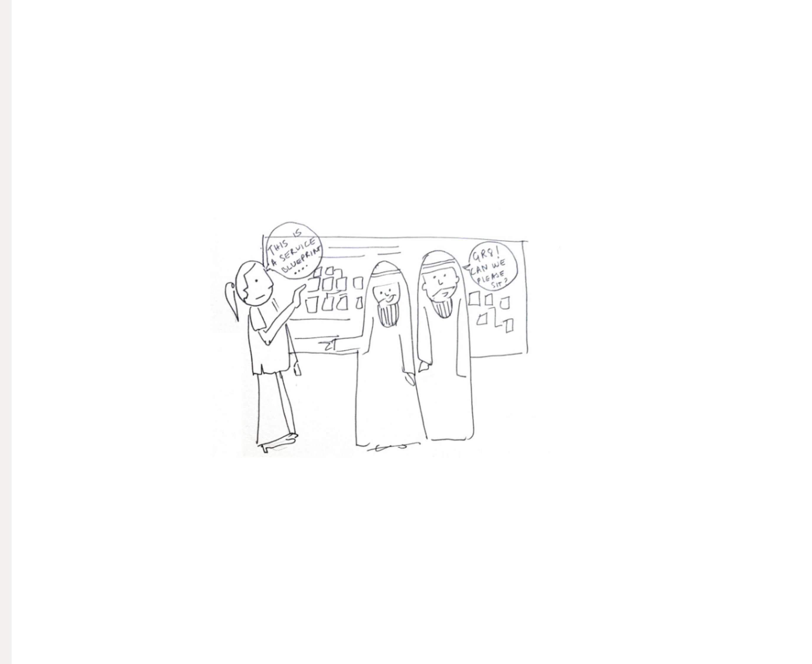
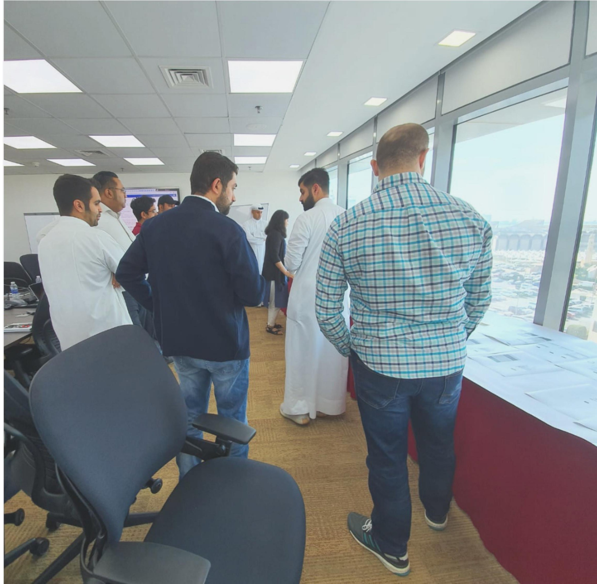
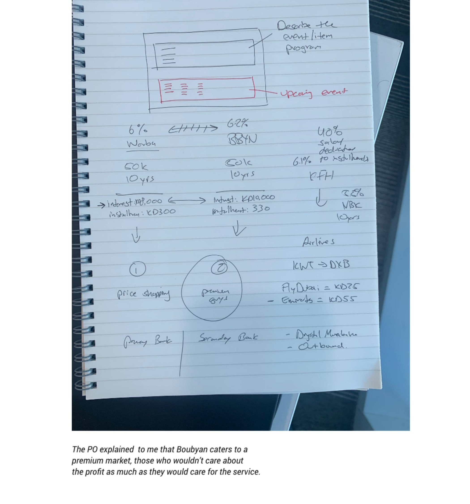
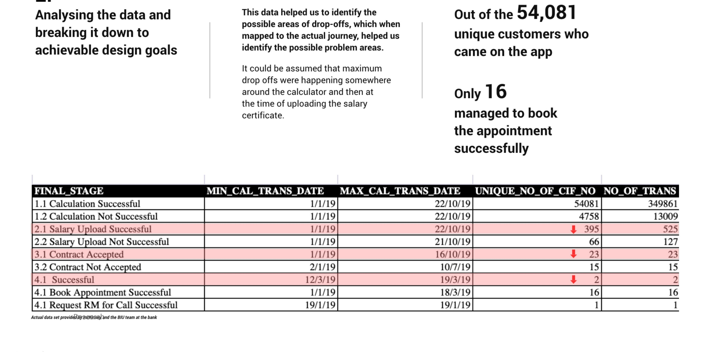
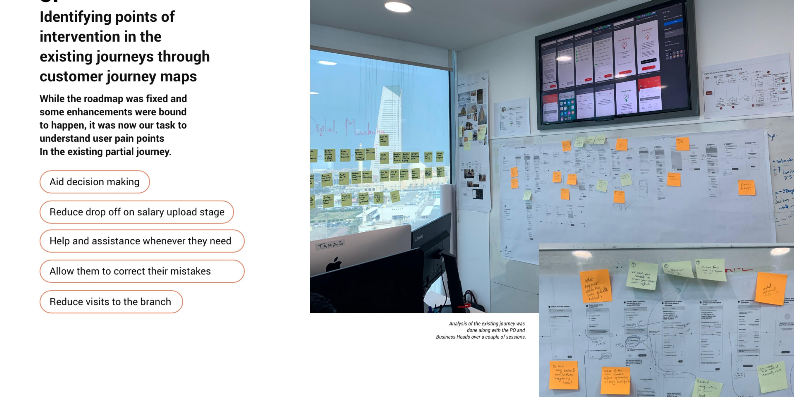
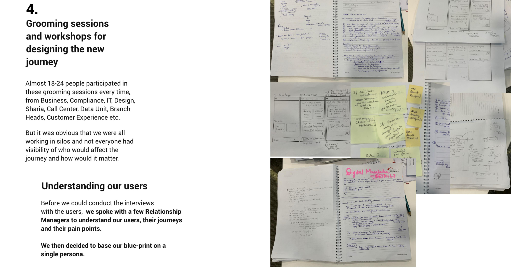
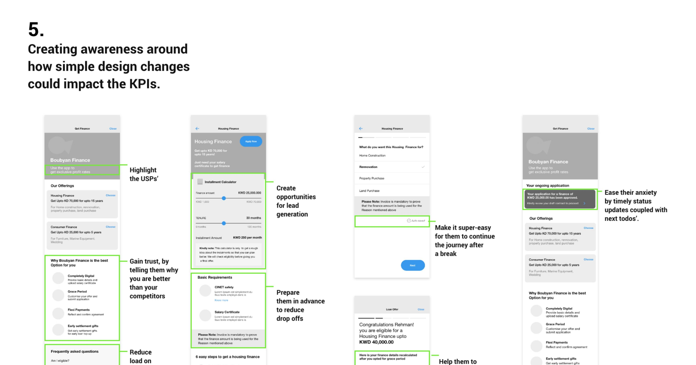
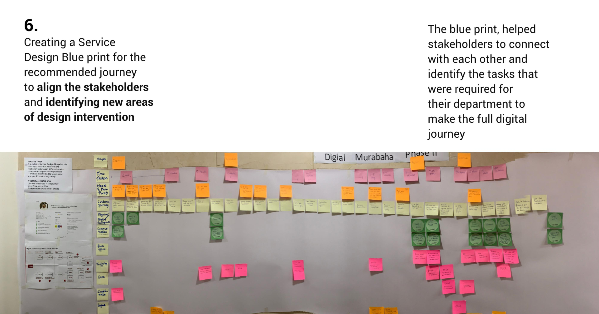
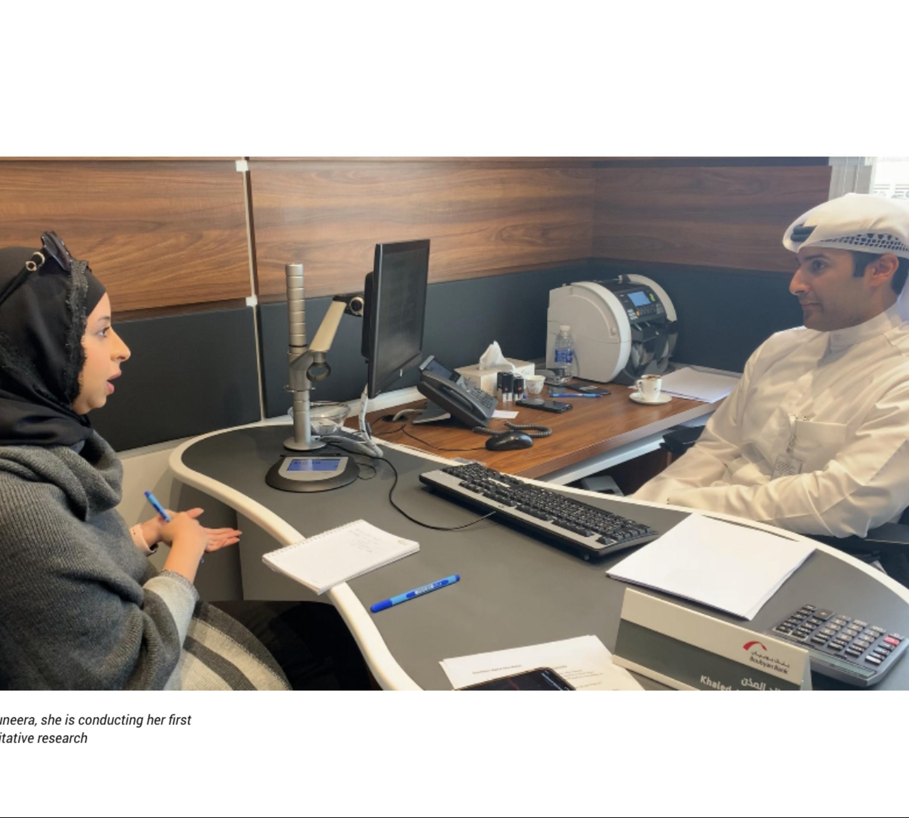

In 2019, nearly half a lakh hits were made on the "Get Finance" journey on Boubyan's Retail Banking App. Only 16 people made it through the entire digital journey. Only 1 person got the loan.
We needed to increase the digital conversions.

To identify areas of improvement in the current Digital Finance journey with an aim to increase conversions in the coming quarter.
Our goals:
There were so many stakeholders — how do I make them listen to me?
Getting access to the users. This was a bank, with strict rules on who we could interview or meet. It took nearly 1.5 months to set up a single usability test, and there was no fixed team for UX research.
Mandates and rules weren't up to date. The governing bank had strict rules about the offering, but customer behaviour was completely tangential — and despite knowing this, the bank was tied to follow the rules anyway.
Existing retail app navigation. The existing navigation wasn't scalable, and breaking it in foresight would mean challenging a lot of other modules in the retail app. We had to work within this constraint.
Two products, both called Digital Murabaha. Every department was working in silos — despite endless grooming sessions, new issues kept surfacing.
Back-stage unpreparedness. A lot of issues were organic, simply because the bank was growing — for example, the call centres weren't equipped enough to handle the queries, which became a major hurdle since lead generation was a key solution for revenue on finance-based products.
Design not driving the process. Despite having solutions, the design team didn't have the onus of leading the experience change — we were looked at as implementors, and that had to change.
Attacking priorities based on where they'd actually move the needle.
Boubyan wanted to position itself as a banking partner that could provide greater service to its clients. Hence, having lower interest rates was never the USP — the idea of a smooth digital journey with a great branch experience would set them apart from competitors.
The market was more profit-oriented than interest-oriented — the rate of profit offered by the bank helped clients pick a finance for themselves. People were interested in getting a finance, but didn't care about the purpose; the purpose was being imposed and mandated by the bank as compliance. This created a huge gap.

Out of 54,081 unique customers who came onto the app, only 16 managed to book an appointment successfully. This data helped us identify possible areas of drop-off, which — when mapped to the actual journey — helped identify the likely problem areas: somewhere around the calculator, and at the time of uploading the salary certificate.
We identified 5 potential points of intervention in the segment. Attacking these would probably lead to more conversions — converted into two phases: Phase 1 focused on lead generation and call centre mobilization, and Phase 2 aimed to create a full-digital journey by introducing better integrations.

While the roadmap was fixed and some enhancements were bound to happen, it was now our task to understand user pain points in the existing partial journey — to aid decision making, reduce drop-off at the salary upload stage, help and assist users whenever they need it, allow them to correct their mistakes, and reduce visits to the branch.

Almost 18–24 people participated in these grooming sessions every time — from Business, Compliance, IT, Design, Sharia, Call Centre, Data Unit, and Branch Heads to Customer Experience. It was obvious that we were all working in silos, and not everyone had visibility of who would affect the journey and how it would matter.
Before we could conduct interviews with users, we spoke with a few Relationship Managers to understand our users, their journeys, and their pain points — then decided to base our blueprint on a single persona.

Small, deliberate changes made a real difference: highlighting the USPs, creating opportunities for lead generation, making it super easy to continue a journey after a break, preparing users in advance to reduce drop-offs, easing anxiety with timely status updates and clear next steps, helping users find what they'd edited, reducing load on the call centre with FAQs, and getting good feedback on why users chose to quit — so we could act on it.

The blueprint helped stakeholders connect with each other and identify the tasks required for their department to make the full digital journey happen — aligning everyone and identifying new areas of design intervention.

From no users to our very first interview. Because this was a banking portal, a huge issue was that it took about a month to persuade 10 users for an interview, with strict regulations around approaching them.
We decided to find an alternative method for conducting regular research and testing sessions — we spoke with the Customer Experience Management team at the bank, and got access to all branches, where our team could go and do research whenever it wanted to. We met branch heads and explained how critical this was for the bank, as it was undergoing a digital transformation.

This project pushed me to translate a hard data problem — 54,081 users in, 16 out — into a set of design interventions that different departments could actually rally around. Getting research access inside a bank from a standing start, and turning a first-time interviewer into a confident researcher along the way, taught me as much about organisational change as it did about interface design.